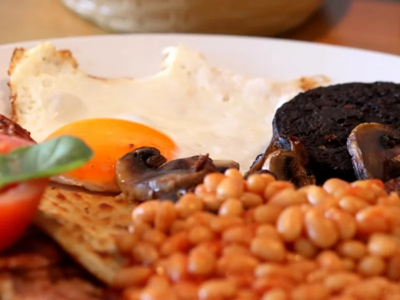
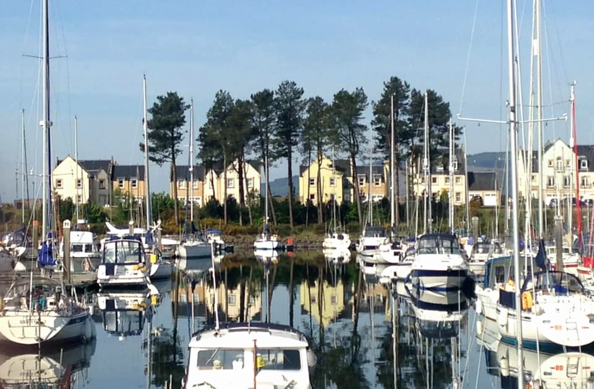
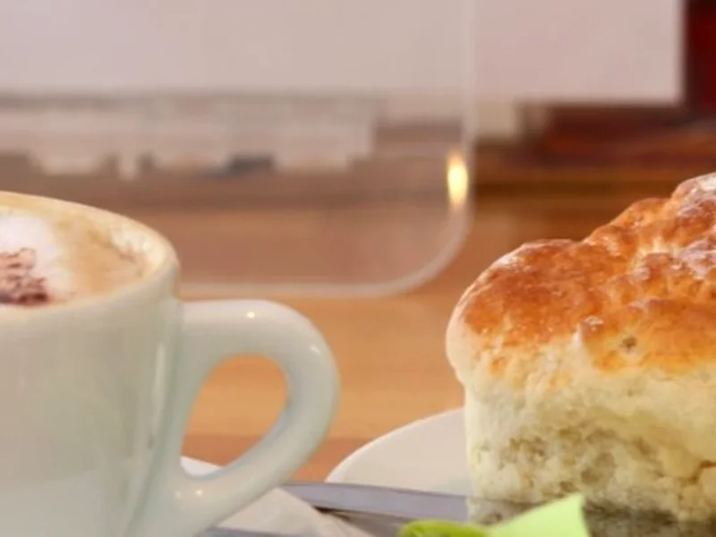
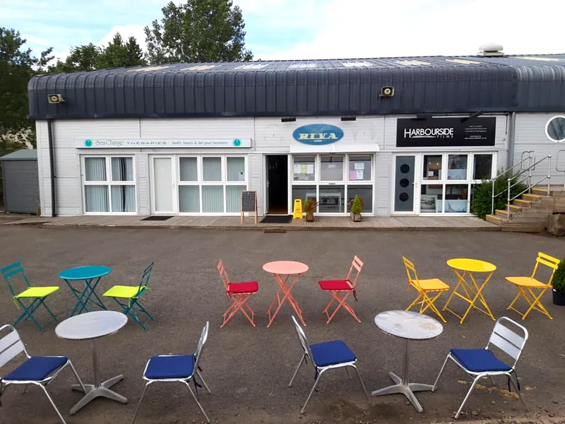
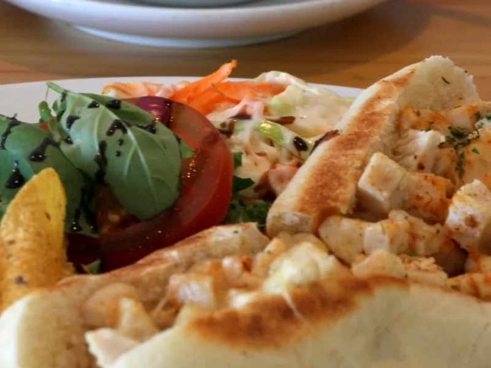
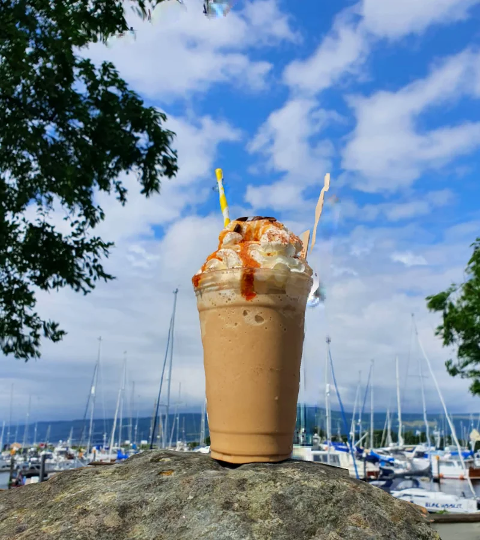
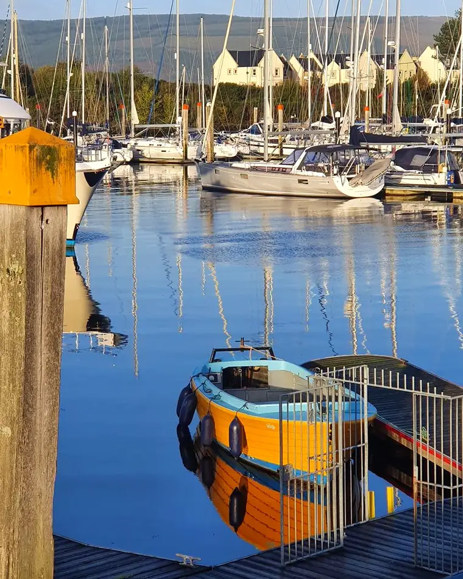

Served all day
All-day breakfast
Fresh to order, with Cafe Riva's popular square slice from A.D. Paton of Largs.

Kip Marina · Inverkip · Scotland
A relaxed, family-run stop for all-day breakfast, Pellini espresso, home baking and a pause beside the boats.

56°N Coffee by the Clyde

Made for the marina Espresso + something warm
Three reasons to pull in
Come off the coastal path, leave the car for free or step ashore for something made fresh.
Fresh to order, with Cafe Riva's popular square slice from A.D. Paton of Largs.

Espresso, hot chocolate, iced coffee and something from the home-baking counter.
Outdoor seating, dogs welcome outside, and the yachts of Kip Marina right beside you.




Stay a while
by the water
2026 season
Last hot-food orders 3pm
Drinks, bakes & ice cream takeaway Until 4pm
Seasonal hours may change in adverse weather. Check Instagram or Facebook for the latest update before a special trip.
Find your way here
Enter Kip Marina from the A78, take the first left and follow signs for the Reception building. There is plenty of free parking.